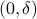
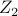
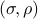

The Sample Complexity of Simple Binary Hypothesis Testing Ankit Pensia, Varun Jog, and Po-Ling Loh March 2024
Robust regression with covariate filtering: Heavy tails and adversarial contamination Ankit Pensia, Varun Jog, and Po-Ling Loh September 2020
the Extreme Points of the -Differential Privacy Polytope* Karan Elangovan, Varun Jog ISIT 2024
Simple Binary Hypothesis Testing under Local Differential Privacy and Communication Constraints Ankit Pensia, Amir Asadi, Varun Jog, and Po-Ling Loh COLT 2023
Simple Binary Hypothesis Testing under Communication Constraints Ankit Pensia, Varun Jog, and Po-Ling Loh ISIT 2022
Many faces of adversarial risk Muni Sreenivas Pydi and Varun Jog NeuRIPS 2021
Adversarial risk via optimal transport and optimal couplings Muni Sreenivas Pydi and Varun Jog ICML 2020
Unifying the entropy power inequality and the Brascamp-Lieb inequality Venkat Anantharam, Varun Jog, and Chandra Nair ISIT 2019
Teaching and learning in uncertainty Varun Jog ISIT 2019
Adversarial influence maximization Justin Khim, Varun Jog, and Po-Ling Loh ISIT 2019
Dual Loomis-Whitney inequalities via information theory Jing Hao and Varun Jog ISIT 2019
Mean estimation for entangled single-sample distributions Ankit Pensia, Varun Jog, and Po-Ling Loh ISIT 2019
Generalization error bounds using the Wasserstein metric Adrian Tovar Lopez and Varun Jog ITW 2018
Convexity of mutual information along the Ornstein-Uhlenbeck flow Andre Wibisono and Varun Jog ISITA 2018.
Graph-Based Ascent Algorithms for Function Maximization Muni Pydi Sreenivas, Varun Jog, and Po-Ling Loh Allerton Conference, 2018
Convexity of mutual information in the heat flow Andre Wibisono and Varun Jog ISIT 2018
Generalization bounds for noisy, iterative algorithms Ankit Pensia, Varun Jog, Po-Ling Loh ISIT 2018.
An entropy inequality for symmetric random variables Jing Hao and Varun Jog ISIT 2018
A convolution inequality for entropy over  Varun Jog ISIT 2017
Information and estimation in Fokker-Planck channels Andre Wibisono, Varun Jog, Po-Ling Loh ISIT 2017
Computing and maximizing influence in linear threshold and triggering models Justin Khim, Varun Jog, Po-Ling Loh NIPS 2016
Information-theoretic bounds for exact recovery in weighted stochastic block models using the Renyi divergence Varun Jog, Po-Ling Loh Allerton Conference, 2015.
On the geometry of convex typical sets Varun Jog, Venkat Anantharam ISIT 2015 Best student paper award
On model misspecification and KL separation for Gaussian graphical models Varun Jog, Po-Ling Loh ISIT 2015
A geometric analysis of the AWGN channel with a -power constraint Varun Jog, Venkat Anantharam. ISIT 2015
An energy harvesting AWGN channel with a finite battery Varun Jog, Venkat Anantharam ISIT 2014
Convex relative entropy decay in Markov chains Varun Jog, Venkat Anantharam CISS 2014
The entropy power inequality and Mrs. Gerber's lemma for groups of order Varun Jog, Venkat Anantharam. ISIT 2013
An information inequality for the BSSC channel Varun Jog, Chandra Nair ITA 2010
Communication-constrained hypothesis testing: Optimality, robustness, and reverse data processing inequalities Ankit Pensia, Varun Jog, and Po-Ling Loh IEEE Transactions on Information Theory, 2024 (To appear)
The many faces of adversarial risk: An expanded study Muni Sreenivas Pydi and Varun Jog IEEE Transactions on Information Theory, 2023
Unifying the Brascamp-Lieb inequality and the Entropy Power inequality Venkat Anantharam, Varun Jog, and Chandra Nair. IEEE Transactions on Information Theory, July 2022
Reverse Euclidean and Gaussian isoperimetric inequalities for parallel sets with applications Varun Jog IEEE Transactions on Information Theory, August 2021
Adversarial risk via optimal transport and optimal couplings Muni Sreenivas Pydi and Varun Jog IEEE Transactions on Information Theory, July 2021
Estimating location parameters in sample-heterogeneous distributions Ankit Pensia, Varun Jog, and Po-Ling Loh Information and Inference, June 2021
Teaching and learning in uncertainty Varun Jog and Po-Ling Loh IEEE Transactions on Information Theory, 2020
Extracting robust and accurate features via a robust information bottleneck Ankit Pensia, Varun Jog, and Po-Ling Loh IEEE Journal on Selected Areas in Information Theory, 2020
Dual Loomis-Whitney inequalities using information theory Jing Hao and Varun Jog Entropy, special issue on “Entropy and Information Inequalities”, 2019
Optimal rates for community estimation in the weighted stochastic block model Min Xu, Varun Jog, and Po-Ling Loh Annals of Statistics, 2019
Intrinsic entropies of log-concave distributions Varun Jog, Venkat Anantharam IEEE Transactions on Information Theory, 2017
Persistence of centrality in random growing trees Varun Jog, Po-Ling Loh Random Structures and Algorithms, 2017
Analysis of centrality in sublinear preferential attachment trees via the Crump-Mode-Jagers branching process Varun Jog, Po-Ling Loh IEEE Transactions on Network Science and Engineering, 2016
A geometric analysis of the AWGN channel with a -power constraint Varun Jog, Venkat Anantharam IEEE Transactions on Information Theory, 2016
The entropy power inequality and Mrs. Gerber's lemma for groups of order Varun Jog, Venkat Anantharam IEEE Transactions on Information Theory, 2014
An information inequality and evaluation of Marton's inner bound for binary input broadcast channels Yanlin Geng, Varun Jog, Chandra Nair, Vincent Zizhou Wang IEEE Transactions on Information Theory, 2013
Channels, Learning, Queueing and Remote Estimation Systems With A Utilization-Dependent Component Varun Jog, Richard J. La, and Nuno C. Martins May 2019